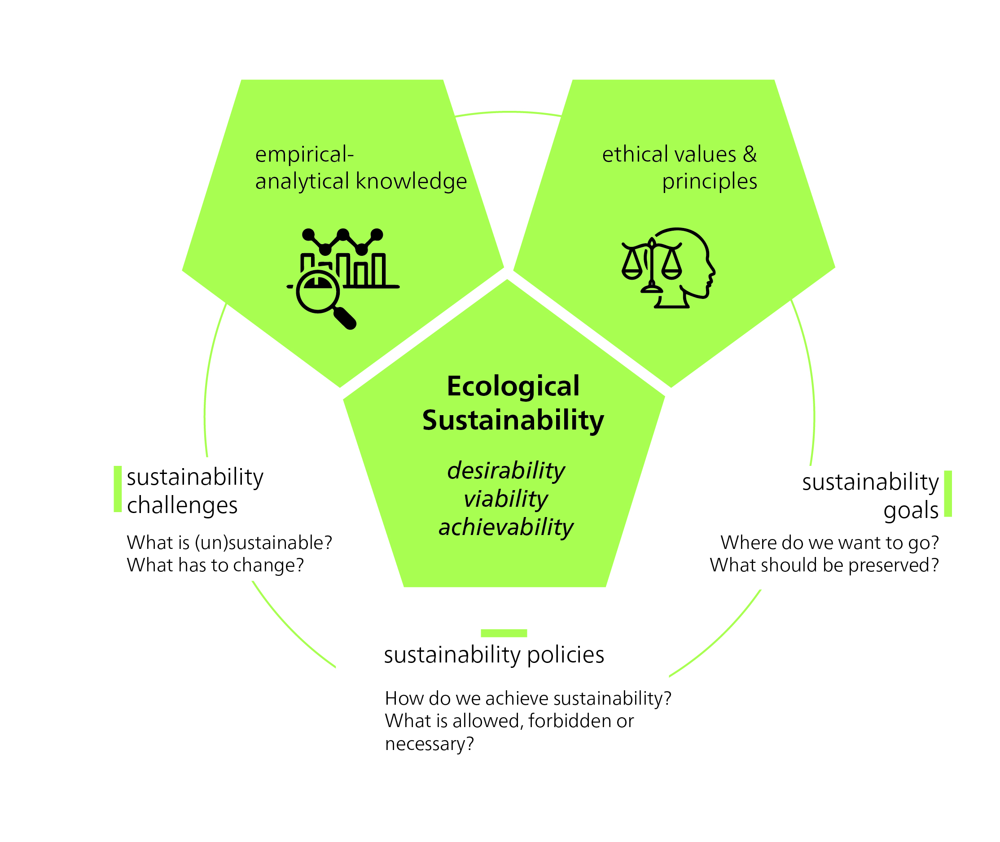
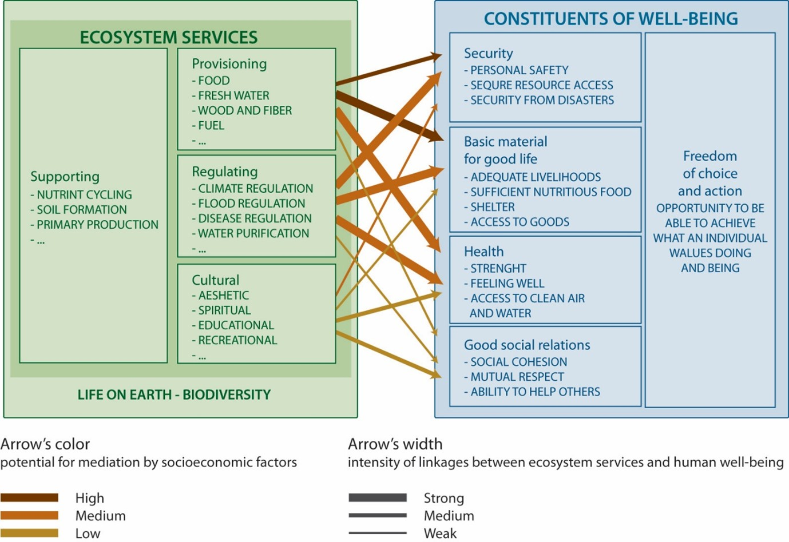
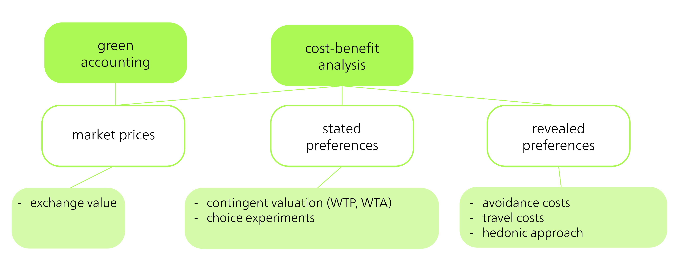
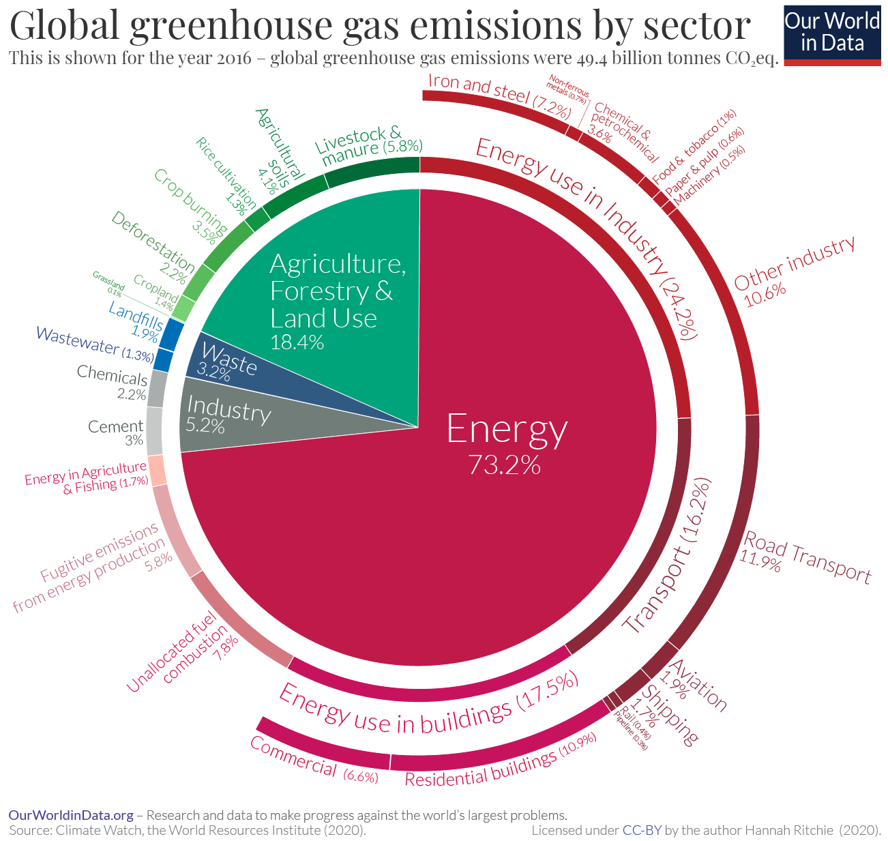
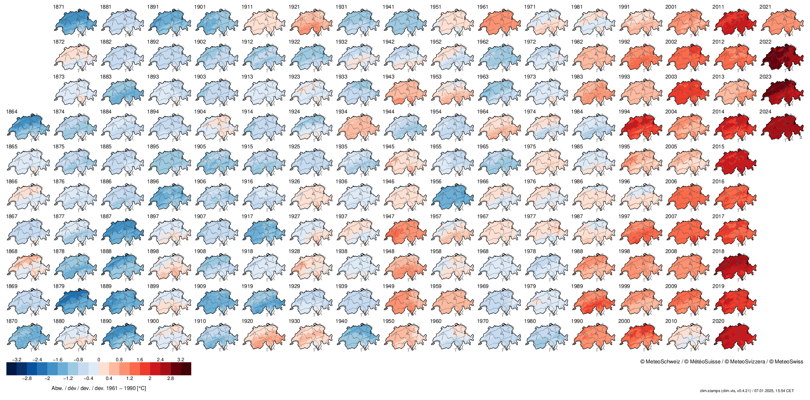
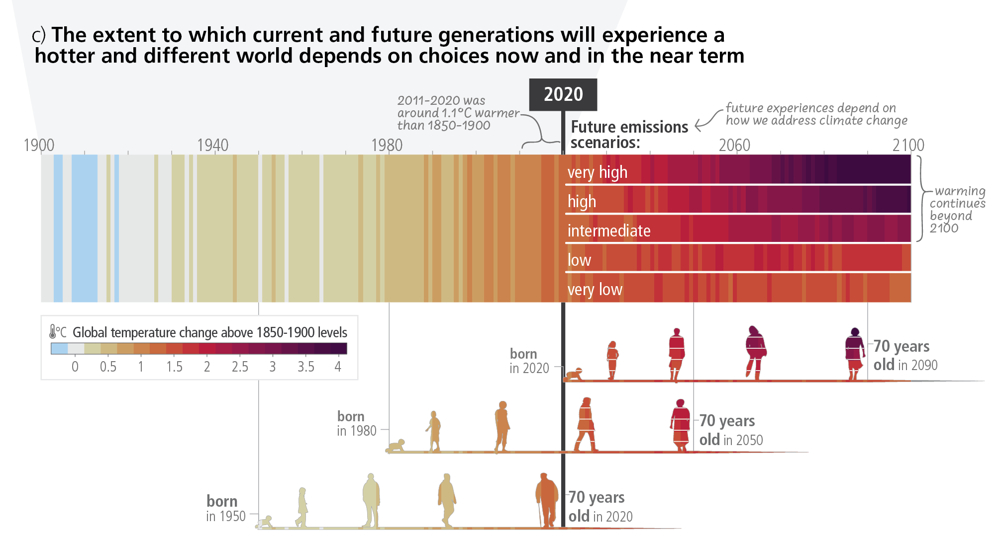
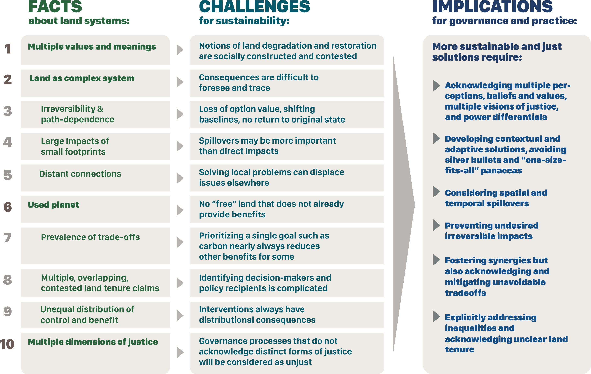
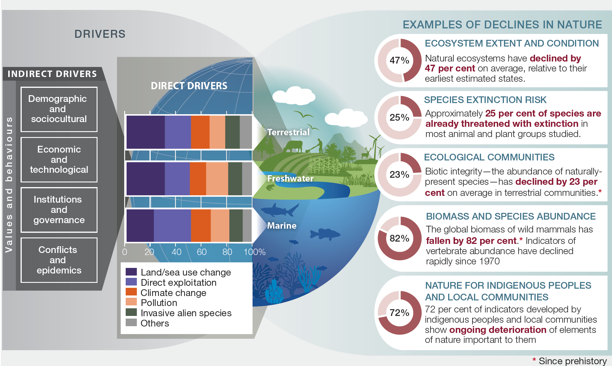
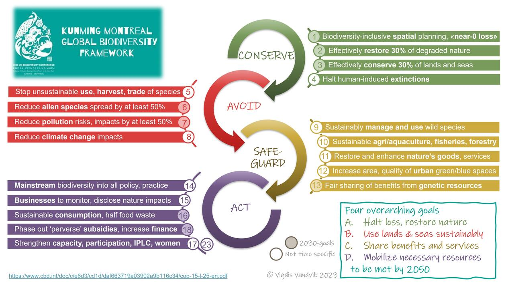

3 Environmental Sustainability
The economy is integral not only to society, but also to nature. Humans are living beings and therefore reliant on material resources to fulfill their needs. They also require intact ecosystems and a climate suitable for human habitation. When we speak of “environmental sustainability”, we generally mean the protection of the diversity and functioning of natural ecosystems and the services they provide for future generations. This is an anthropocentric definition, as it focuses on human activities and how these seek to ensure the long-term sustainability of nature for human benefit. This perspective is also reflected in our everyday language and our dualistic separation of “human” and “environment”, a separation that goes back to the 19th century and persists to this day. For example, we separate science into “natural science” and “social science”, and our analyses often conceptualize environmental damage as “externalities”. Another understanding of environmental sustainability emphasizes the importance of maintaining the self-regulation of the Earth’s climate system. This view highlights the interaction and feedback between various components of the Earth’s climate system.
3.1 The normative dimension of environmental sustainability
Although our understanding of how ecosystems work is based on thoroughly researched empirical information (and therefore constitutes “systems knowledge”), environmental sustainability remains a normative concept. This means that it is based not only on scientific findings, but also on an ethical evaluation (Figure 3.1). The various interpretations of environmental sustainability offer different answers to the question of what should be preserved, and why. Each approach to environmental sustainability therefore expresses the desired state of the ecological environment, both now and in the future – what aspects of nature should be preserved or survive from the present to the future. For example, when we talk about ecosystem services, the intention is often to preserve ecosystems in a way that continues to support and maintain our own welfare (in this sense, it is an anthropocentric perspective).

Ethical judgments and justifications shape which ecological properties and functions we preserve for future generations, and which we deem intrinsically valuable in nature. What constitutes a desirable state for ecosystems, and why? What aspects of the ecological environment deserve protection, and what is the aim of this protection? Is it necessary to keep ecosystems as pristine as possible, and how do we define “naturalness”? To what extent should we use ecosystems for human purposes without restriction, and are there areas that we should leave for organisms to use, with minimum human intervention? Interpretations of environmental sustainability depend on the goals being pursued: for whom, why, and how (Figure 3.1).
3.2 Ecosystems, Ecosystem management, and Ecosystem services
An ecosystem is a group of living organisms and their physical surroundings that interact with each other. Ecosystems can range from small, like a flowerpot, to large, like an ocean. When similar ecosystems are found in a larger region with the same climate, they are called biomes. Energy and material flows are important for the functioning of an ecosystem. Some of these flows, such as the carbon cycle, take place at the global level, while others are more localized. Most ecosystems obtain their energy from the sun and can influence the Earth’s climate through their interactions (Britannica 2025).
Ecosystem services are the benefits that humans derive from ecosystems such as mangrove forests, oceans, or wetlands. The services provided by ecosystems include the provision of clean water, the prevention of flooding, the promotion of crop growth, and the provision of places for leisure activities. The Millenium Ecosystem Assessment, published in 2005, divides ecosystem services into four categories (cf. green Box in Figure 3.2): provisioning services, regulating services, cultural services, and supporting services (Millenium Ecosystem Assessment 2005). Note that the supporting services, which are primarily fundamental biophysical processes, enable and guarantee the other services in the first place.

According to the Millenium Ecosystem Assessment (2005), these ecosystem services can improve our quality of life and our economy (cf. blue Box in Figure 3.2). While this way of looking at ecosystems views humans as separate from the environment, it emphasizes the relevance of ecosystem services for human well-being. Ultimately, the concept of ecosystem services seeks to place greater consideration on the value of nature in policy and economic decisions. However, the ecosystem services concept also plays a role in landscape and spatial planning. For example, it’s used to analyse how spatially effective (legal) regulations impact ecosystem services, and consequently, human well-being (cf. Albert et al. 2016).
Humans have had an influence on many ecosystem services, both directly and indirectly. While these impacts have often been negative, some have been positive. For example, replacing natural ecosystems with cultivated agroecosystems has increased the value of ecosystem services for humans. Take, for example, dry meadows and pastures in Switzerland. Only through centuries of forest clearing and extensive agricultural use in alpine locations could the ecosystem services these areas provided (in this case, fodder production) be used and increased. At the same time, these anthropogenically influenced sites harboured rare meadow plants and pollinators, thus fostering a high level of biodiversity. These areas are also vital for tourism, as they significantly shape the alpine landscape. Consequently, these extensively used areas generally offer greater overall ecosystem service multifunctionality than intensively farmed grasslands (Richter et al. 2024).
Many of the negative effects on ecosystems and their services result directly from human land use and overfishing. In addition, indirect factors such as climate change and invasive non-native species significantly impair the stability and functionality of ecosystems. Two research projects with significant CDE involvement – Woody Weeds and Woody Weeds+ – have demonstrated that invasive woody plants such as Prosopis juliflora have a major impact on biodiversity and local livelihoods in East Africa. Originally introduced to combat desertification and timber extraction, this species displaces native vegetation and is not suitable as animal feed without processing (CDE project website).
3.2.1 The monetary valuation of ecosystem management
The term nature’s services first appeared in the publication “How much are Nature’s Services Worth?” (Westman 1977). The synonymous term “ecosystem services” was coined a few years later (Ehrlich and Ehrlich 1981). The concept of ecosystem services and the thinking behind it are closely linked to economic philosophy and practice (Gómez-Baggethun et al. 2010). Around 20 years after the introduction of “nature’s services”, Robert Costanza and colleagues estimated that the global value of 17 ecosystem services was worth 33 trillion US dollars per year (R. Costanza et al. 1997). A recalculation in 2011 showed that this value had already fallen by between 4.3 trillion and 20.2 trillion US dollars per year (Robert Costanza et al. 2014). It is predicted that by 2050, the value of ecosystem services will either drop by up to USD 51 trillion per year, or rise by up to USD 30 trillion per year, depending on land use scenario (Kubiszewski et al. 2017).
Calculating the monetary value of ecosystem services typically involves three steps and requires high-quality and differentiated data. 1) The first step is to measure the change in ecosystem services after an intervention, thus placing the focus not on the status quo, but on the difference. 2) The second step is to evaluate the impact of this change on people’s socio-economic well-being. 3) The third and final step is to place a monetary value on the resulting change in productivity or prosperity. There are many different methods for calculating the monetary value of ecosystem services (Figure 3.3). One such method is “green accounting”, which uses existing market values, if available, or exchange values as an approximation (e.g. comparing avalanche barriers and protection forests). Another method is cost–benefit analysis, which can be divided into two types: stated preferences and revealed preferences.

Stated preferences involves people stating (e.g. in a survey) the extent to which they would be willing to pay for certain ecosystem services, or which changes they would be willing to accept (contingent valuation). Another variation of this method involves choosing between different (usually sub-optimal) options, each representing a trade-off based on changes in ecosystem services (which are then analysed econometrically). In contrast, revealed preferences are based on actual behaviour. For example, it involves analysing avoidance costs (e.g. how much people pay for noise barriers) or calculating travel costs (which assumes that the time and travel costs incurred for visiting a destination reflect the value of the place, and thus, in a broader sense, an ecosystem service). Other methods include using hedonic approaches to determine the extent to which favourable or unfavourable environmental influences, and thus their quality, can affect the value of a property.
Each of these methods has its advantages and disadvantages. They are criticized mainly for their one-sided assessments and failure to account for social inequalities, power relations, and cultural differences. Consequently, these methods are limited in their ability to promote fair and environmentally sustainable decisions.
The principle behind Payments for Ecosystem Services (PES) involves compensating land users for maintaining a component of a specific ecosystem service. Such compensation may, for example, be paid by organizations or companies for which these specific ecosystem services are important. A well-known example of PES is the “Pagos por Servicios Ambientales” (PSA) programme in Costa Rica. This national programme, which has been operational since 1997, was set up to reduce deforestation and promote reforestation by paying landowners to maintain, reforest, or sustainably manage forest areas. The payments aim to promote the provision of ecosystem services such as carbon sequestration, water conservation, biodiversity conservation, and scenic beauty. The payments in this project come from various sources, including a tax on fuels and international funding from organizations interested in carbon offsetting. Studies show that the programme has significantly reduced the rate of deforestation in the country and promoted the conservation of biodiversity, while at the same time increasing the income of landowners (Porras et al. 2013).
3.2.2 Criticism of ecosystem services, and further and alternative concepts
While the concept of ecosystem services has been recognized and applied in the scientific and policy debate, it has also been widely criticized (see e.g. Kosoy and Corbera 2010; Norgaard 2010). One argument is that by focusing on ecosystem services, we reduce the complex and diverse values of ecosystems to their monetary benefits for humans (cf. Schröter et al. 2014). This economic reduction of nature neglects the non-quantifiable but nevertheless important aspects of nature, such as spiritual or intrinsic values (Fairhead, Leach, and Scoones 2012). The commodification of nature through ecosystem services could ultimately also lead to an exploitative relationship between humans and nature (cf. Schröter et al. 2014) or an exacerbation of social inequalities between powerful actors and marginalized groups (Dawson et al. 2021), as the concept does not explicitly consider justice (Loos et al. 2023, 478). In some cases, it is even assumed that the concept of ecosystem services could conflict with – and undermine – biodiversity conservation (cf. Schröter et al. 2014).
“The flurry of enthusiasm for optimizing the economy by including ecosystem services has blinded us to the more important question of how we are going to make the substantial institutional changes to significantly reduce human pressure on ecosystems, especially by the rich, and to adapt to and work effectively with the rapid ecosystem changes being driven by existing and foreseeable climate dynamics.” (Norgaard 2010, 1220)
In response to this criticism, the IPBES (Intergovernmental Platform on Biodiversity and Ecosystem Services), (see chapter Biodiversity Loss) has further developed the concept of ecosystem services and developed another concept, that of Nature’s Contribution to People (NCP). NCPs are defined as “all the positive contributions, or benefits, and occasionally negative contributions, losses or detriments, that people obtain from nature.” (Pascual et al. 2017, 9). The concept may resemble ecosystem services, but it goes further and recognizes that nature and its contributions to a good life can be perceived and viewed in different ways, depending on the cultural and institutional context. The concept seeks to include different world views, such as Indigenous knowledge systems, thus taking into account both intrinsic (i.e. non-anthropocentric) and relational values of nature (Díaz et al. 2018). Overall, this approach also includes context-specific perspectives, and it gives greater consideration to the justice dimensions than the concept of ecosystem services does (Loos et al. 2023).
However, such plural valuations are also subject to criticism and pose various challenges. For example, Jacobs et al. (2023) point out that current approaches to integrating multiple values and perspectives into ecosystem assessments risk merely promoting pseudo-participation, while existing structures of power and discrimination remain unchanged. Plural valuations aim for inclusivity and democracy, but they can inadvertently lead to conflict, power imbalances, and unclear outcomes if not carefully designed. Scientists have also criticized the above-mentioned NCP concept, which is often seen as an inadequate development of utilitarian environmentalism. This is a strongly Western and anthropocentric perspective that maintains a dualistic separation of humans and nature (cf. Muradian and Gómez-Baggethun 2021). Muradian and Gómez-Baggethun (2021) [p. 7], propose that “in order to induce transformative change in human-nature relations we need a shift from a morality of utility to a morality of care, a reallocation of property rights, and the extension of the community of justice to non-human entities.” A notable example of this transformation is the 2017 recognition of New Zealand’s Whanganui River as a legal person (s. Charpleix 2018).
3.3 Planetary boundaries
The current era is called the Anthropocene because human activities are exerting an increasingly profound impact on the Earth and its systems. Although this term has not (yet) been recognized as an official geologic or geochronological epoch by geological bodies (Zhong 2024), it is used to describe the enormous human impact on the environment. There is no uniform definition of the origins of the Anthropocene; possible markers include human impact on greenhouse gas concentrations through rice cultivation, the global spread of radioactivity from nuclear testing, or the appearance of plastic particles in geological sediments. The Industrial Revolution is generally considered the start of the Anthropocene.
A quantitative definition of environmental sustainability was proposed by Rockström et al. (2009) and Steffen et al. (2015), who identified nine planetary boundaries: climate change, biosphere integrity, land-system change, freshwater change, biogeochemical flows, ocean acidification, atmospheric aerosol loading, stratospheric ozone depletion, and novel entities. These planetary boundaries serve as a scientific reference point and show the limits within which our global socio-economic systems must operate to ensure the well-being of humanity (see also the Debates section).
This chapter focuses on three of these boundaries, described here as climate change, land use change, and biodiversity loss. These three crises are mutually reinforcing and form a complex web of interactions.

3.3.1 The climate crisis (climate change)
Climate change – or, to use a term more illustrative of the urgency, the climate crisis – is one of the most pressing issues of our time. It receives much media attention and is exemplary of a “wicked” problem (Hulme 2009, 9). It is the focus of the Fridays for Future movement that was initiated by Greta Thunberg, and it is a topic, of discussion at least, on the (global) political stage. While local conditions and natural fluctuations contribute to some uncertainties in climate models and statistics, the scientific evidence clearly shows that rising global temperatures have an enormous impact on environmental sustainability and human well-being. This is why climate change is one of the nine planetary boundaries.
The term climate describes the average state of the atmosphere (temperature, precipitation, humidity, etc.) over a period of at least 30 years at a specific location. By contrast, weather describes the short-term state (i.e. from seconds to weeks) and includes weather phenomena such as thunderstorms or heat waves (NCCS n.d.). The climate system, in turn, encompasses not only the atmosphere but also the hydrosphere (oceans, lakes, rivers, groundwater), the cryosphere (glaciers, snow cover, sea and lake ice, permafrost), the biosphere (living organisms), and the lithosphere (soils or the outermost layer of the earth). In particular, it refers to the physical, biological, and chemical interactions and interdependencies between these five spheres. In addition, the climate system is influenced by radiation from space (see figure below).

Material and energy flows between the various components of the climate system, such as the carbon cycle, can act as feedback mechanisms. We have already learnt about such feedback mechanisms in the chapter on systemic effects (see chapter 2). These can either be positive, if the feedback reinforces the original change, or negative, if the feedback attempts to reverse the original change. Here are examples of a positive and negative feedback effect in the climate system:
Positive feedback: When the Earth’s surface temperature increases, so does water evaporation, creating a positive feedback loop. Water vapour is the most significant greenhouse gas in the atmosphere. As temperatures rise, more water vapour enters the atmosphere, increasing the reflection of heat back to the Earth’s surface and leading to further evaporation. This cycle accelerates warming and atmospheric water vapour accumulation. On Venus, this feedback mechanism intensified the greenhouse effect to the point where all liquid surface water evaporated.
Negative feedback: Increased atmospheric CO2 can enhance photosynthesis, a process known as CO2 fertilization and an example of a negative feedback mechanism. Although an increase in carbon dioxide can cause plants to bind more carbon in biomass than before, it is far from sufficient to compensate for the increasing CO2 content in the atmosphere, which is mainly caused by the burning of fossil fuels and changes in land use. The ability of plants to take up additional CO2 is limited by various factors such as nutrient availability, water resources, and temperature conditions. Therefore, this feedback mechanism is insufficient in compensating for the increase in atmospheric CO2 concentrations caused by human activities.
Positive feedback mechanisms or the failure of negative feedback can lead to significant thresholds being exceeded in the climate system. These thresholds are referred to as tipping points of the climate system and are closely linked to the concept of planetary boundaries (see chapter 2.4 on The debate about the Great Transformation). When these thresholds are exceeded, abrupt and often irreversible changes can occur in the climate system, destabilizing the climate and leading to accelerated climate change. The concept of tipping points emphasizes the urgency of limiting global warming and reducing greenhouse gas emissions. Exceeding these thresholds will make it increasingly difficult to control climate change or minimize its effects. Ultimately, the Earth risks becoming a large greenhouse (Hothouse Earth scenario) (see Figure 3.6).

A total of 16 tipping points are assumed to exist (Figure 3.7), including the Siberian permafrost soils or the West Antarctic Ice Sheet. These tipping points have different threshold values, meaning that some will be reached earlier, with less global warming than others. If these tipping points are reached or exceeded, they can trigger self-reinforcing feedback effects that lead to further warming, initiate further tipping points, and intensify climate change. Some of these tipping points are already in a critical state, as explained impressively by Johan Rockström, one of the founders of the Planetary Boundaries concept (https://m.youtube.com/watch?v=Vl6VhCAeEfQ). In the Amazon, for example, some areas now emit more CO2 than they absorb – becoming carbon sources rather than sinks – due to forest fires, climate-change-induced water stress, and deforestation (see chapter 3.3.2 on Land use change) (Gatti et al. 2021; Harris et al. 2021). Consequently, the Amazon is already in transition and losing resilience (Flores et al. 2024). Another worrying and very real tipping point is the Atlantic Meridional Overturning Circulation, or AMOC [Rahmstorf (2024); https://www.youtube.com/watch?v=ZHNNW8c_FaA]. The AMOC is nearing its tipping point (van Westen, Kliphuis, and Dijkstra 2024), with projections suggesting it could collapse as early as the middle of this century (Ditlevsen and Ditlevsen 2023). A collapse would lead to increased European heat waves and sea-level rise along the north-eastern US coast (Rahmstorf 2024).

But what is causing the Earth to warm and climate change to occur? In addition to natural causes of climate change such as geological, long-term causes (Earth’s axial rotation, Milanković cycles, volcanic eruptions), the primary driver of global warming is the greenhouse gas effect. The greenhouse gas effect is a process where short-wave solar radiation enters the Earth’s atmosphere and is re-emitted from the Earth’s surface as long-wave infrared radiation. Greenhouse gases – such as carbon dioxide, methane, and water vapour – absorb some of this infrared radiation and emit it in all directions, causing some of the heat to return to the Earth’s surface. Without this effect, the Earth would be too cold to support life. Today, however, there are too many greenhouse gases in the atmosphere due to anthropogenic emissions, causing the earth to warm up.
The largest share of human CO2 emissions, around ¾ of the global total, originates from energy production, i.e. primarily electricity and heat generation (Figure 3.8). This is largely due to the combustion of coal, gas, and oil, with emissions from industry (comprising 24.2% of the global total), transport (16.2%), buildings (17.5%), and agriculture (18.4%). The main drivers of agricultural emissions are livestock farming, deforestation for agricultural land, and the use of nitrogen fertilizers on agricultural soils.
Within the transport sector, air traffic accounts for 1.9% of global emissions (see figure below). In Switzerland, however, flights account for about 11% of national emissions. These flight emissions are largely attributable to international air traffic (Bundesamt für Umwelt (BAFU) 2025), although the calculations exclude Basel-Mulhouse Airport, which is located on French soil. Despite this evidence, Switzerland has not yet introduced a CO2 tax on kerosene (the main component of aviation fuel), although there is one on fossil fuels such as heating oil and natural gas. It should however be noted that climate impact is not solely determined by greenhouse gas emissions (Allen et al. 2018; Lee et al. 2021; Neu 2021). The warming potential of air travel can thus be significantly higher than indicated by greenhouse gas emissions alone, as non-CO2 effects from flights – such as water vapour, nitrogen oxides (NOx), and soot – also affect the climate (Lee et al. 2021).
Globally, air travel emissions have more than doubled since 1990, driven primarily by international flights. Despite a sharp drop in the number of flights in 2020 due to the pandemic, flight emissions have rebounded and are projected to surpass 2019’s record levels in the coming years.

Recent calculations and climate reports indicate that the Earth’s temperature has risen by around 1.2°C in the last 10 years (2014–2023) compared to pre-industrial levels (1850–1900)(UN 2024). In addition, 2023 was the warmest year on record, with a global surface temperature of 1.45°C above the pre-industrial baseline. This may not sound like much, but it represents a substantial heat increase, given the oceans’ vast size and heat storage capacity (Ritchie 2020)

The Paris Climate Agreement, adopted in December 2015, was the first international treaty where industrialized and emerging countries jointly pledged to curb greenhouse gas emissions. Its core objective is to limit global temperature rise to a maximum of 2°C, with efforts to pursue a 1.5°C limit, relative to pre-industrial times. In 2018, the Intergovernmental Panel on Climate Change (IPCC) published a Special Report containing some startling facts: Most notably, that we only have few years left – until 2030 – to avoid exceeding 2°C. The next major decision in international efforts that built on the Paris Climate Agreement was the 2022 climate conference, COP 27. At COP 27, signatories agreed to establish the Loss and Damage Fund, a result of decades of prior discussion, designed to help developing countries to receive financial support after extreme weather events.

But what will it take to prevent the temperature from rising by more than 1.5 degrees? A whole lot. Anthropogenic CO2 emissions must fall by 45% between 2010 and 2030, and net CO2 emissions must fall to zero by 2050. While we are adopting greener technologies for marginal activities like car purchases or building efficiency, we still risk neglecting the serious threat posed by the carbon that is already in the atmosphere. It’s important to distinguish between ongoing emissions (flow) and accumulated atmospheric carbon (stock). Flow plays a subordinate role for the planet – it’s the stock that drives global warming. Climate change is therefore primarily a stock problem, rather than a flow problem. This is a challenging concept, not only for laypeople. Indeed, Sterman and Sweeney (2007) observed that most adults had difficulty in grasping the stock aspect of climate change.

An effective mental model is the bathtub analogy: if the inflow of water through the tap (i.e. our emissions, or flow) exceeds the outflow of water through the drain (carbon absorption by rainforests, oceans, etc.), the water level (the atmospheric carbon stock) increases. The past five years, and twenty of the last twenty-two, have been the warmest on record. This warming trend is a direct result of the rising water level in that “bathtub”.
Impacts: Climate change is expected to have a range of direct and indirect impacts, some of which are already occurring. These include sea level rise, shrinking glaciers, threats to water and food security, an increase in extreme weather events, adverse health effects related to temperature, heatwaves, droughts and excessive precipitation, wildfires, and an increase in geomorphological activities and thus natural hazards due to permafrost thaw.
3.3.2 Land use change
Land use change, like deforestation for agriculture or urban expansion, has a significant impact on the environmental dimension of sustainability. Land use change threatens biodiversity and disrupts ecosystem functions. It can also increase greenhouse gas emissions, alter water cycles, or deplete valuable agricultural land. This can result in a reduction of ecosystem services (see chapter 3.2 on Ecosystems, Ecosystem management, and Ecosystem services), ultimately restricting human well-being. Land use change is one of the nine planetary boundaries that has already been exceeded, according to Richardson et al. (2023).
Some key definitions are needed to understand land use change:
Land cover refers to the characteristics of the land surface and its immediate subsurface, including biota, topography, and human structures (Lambin, Rounsevell, and Geist 2000, 322).
Land use is the way in which humans use land cover (Lambin, Rounsevell, and Geist 2000, 322).
Land use change represents the change from one land use to another (Lambin, Rounsevell, and Geist 2000, 322).
Land degradation means “reduction or loss, in arid, semi-arid and dry sub-humid areas, of the biological or economic productivity and complexity of rainfed cropland, irrigated cropland, or range, pasture, forest and woodlands resulting from land uses” (UN 1994, 4).
Land systems “represent the terrestrial component of the Earth system and encompass all processes and activities related to the human use of land, including socioeconomic, technological and organizational investments and arrangements, as well as the benefits gained from land and the unintended social and ecological outcomes of societal activities” (Peter H. Verburg et al. 2013, 433).
Land can also be understood as a socio-ecological system (Chapin et al. 2006) in which the social and ecological subsystems interact and depend on each other. This system is characterized by mutual feedback, with humans considered integral components of nature (Peter H. Verburg et al. 2015).
Various drivers, i.e. reasons or causes, are responsible for the occurrence of land use change. These factors vary depending on the type of land use. For example, the main drivers of global deforestation, a form of land use change, are commercial agriculture, slash-and-burn agriculture, commercial forestry, urbanization, and forest fires (Curtis et al. 2018). Deforestation has already led to an alarming decline in biodiversity (see next chapter) and the disruption of carbon cycles (see previous chapter or box). For example, the Agriculture, Forestry, and Other Land Use (AFOLU) sector is a major contributor to global anthropogenic greenhouse gas emissions, accounting for approximately 13% of CO2, 44% of CH4, and 81% of N2O emissions (IPCC 2019). These interactions between climate change and land use/land use change show that land systems and climate systems should be considered systemically, rather than in isolation (Richardson et al. 2023). Figure 3.12 is a schematic representation of these interactions between land and greenhouse gases.

Beyond their impact on climate-relevant greenhouse gas flows, land use and land use change also disrupt other biogeochemical material cycles, such as nitrate, phosphorus, or sulphur cycles, linking them to another already-exceeded planetary boundary, that of biogeochemical flows (Richardson et al. 2023). A classic example of this is eutrophication, a process that occurs when agricultural fertilizer, such as phosphorus, enters nutrient-poor waters and leads to excessive growth of algae, known as algal blooms. As these blooms decompose, they deplete the oxygen level, ultimately restricting or even preventing aquatic life (Galloway et al. 2008; Smith, Joye, and Howarth 2006).
Deforestation in tropical regions is a form of land use change that is influenced not only by local needs, but also by international decisions and demands (Curtis et al. 2018). This suggests that preventing deforestation must be addressed at both local and international levels (DeFries et al. 2010). However, distant factors influence not just deforestation, but land use change in general (Meyfroidt et al. 2013). In science, such phenomena and processes are referred to as telecoupling (Liu et al. 2013). Telecoupling describes the socio-economic and ecological interactions between distant human and natural systems, analysing how actions in one place (the sending system) can affect another place (the receiving system). For example, new EU regulations require that products entering the EU market from the end of 2024 are deforestation-free (Regulation on Deforestation-free products - European Commission (europa.eu). These regulations are likely to have significant ecological (and social) effects in the countries of cultivation (Coenen et al. 2023).
This chapter has shown that land, land use, and land use change are a multifaceted topic. Underscoring the importance of this issue, Meyfroidt et al. (2022) summarized ten facts about land systems for sustainability (Figure 3.13, left), grounded in empirical research. These facts, in turn, lead to ten associated challenges (Meyfroidt et al. 2022). For example, Fact 2 (“land as complex systems”) leads to the challenge that the consequences of interventions in land systems are difficult to predict and understand, which makes it difficult to develop effective measures or policies regarding land use. Several issues discussed in this chapter align with these facts, such as telecoupling and Fact 5, “Distant connections”.

3.4 Biodiversity loss
Biodiversity is defined as the variety of life in all its forms, ranging from genes to species to ecosystems (CBD, 1992). It is an essential foundation for the well-being of humankind and thus a substantial component of environmental sustainability, forming the basis for numerous ecosystem services (Haines-Young and Potschin-Young 2010) or Nature’s Contribution to People (Antunes et al. 2024). Biodiversity is also closely linked to several of the planetary boundaries, especially land-system change and biosphere integrity (Steffen et al. 2015). It is clear that an unchecked loss of biodiversity could trigger tipping points in ecosystems, disrupting the Earth’s balance and severely impairing the ability of our planet to support human life. The protection and restoration of biodiversity is therefore considered key to a sustainable future.
Yet biodiversity is currently in an alarming state (see infobox below). Worldwide, species diversity has been declining for several decades (Butchart et al. 2010; Díaz and Malhi 2022), a downward trend that is predicted to continue (Díaz and Malhi 2022). As a result, there is already discussion of a sixth mass extinction (Ceballos, Ehrlich, and Raven 2020). To counteract this development, the Convention on Biological Diversity (CBD) was ratified at the 1992 Rio Earth Summit (CBD, 1992), with Swiss participation. This legally binding agreement means that if Switzerland sends delegates to subsequent conferences, any new provisions must be legally implemented.
Biodiversity monitoring is an important tool for tracking changes in biodiversity. The International Union for Conservation of Nature (IUCN)’s Red List of Threatened Animal and Plant Species, maintained since 1964, plays a particularly important role in this. It categorizes the status of a species into one of nine categories, from “not endangered” to “extinct”. Figure Figure 3.14, for example, shows the percentage of species in each category at the global level. The same categories are also used in Switzerland. Such databases, among other benefits, help improve policymaking and nature conservation planning, and facilitate more appropriate allocation of (financial) resources in research and society. Despite the extensive and established monitoring of species, cautious studies assume that only between 1.5% and 18% of terrestrial vertebrate species on our planet have been identified and described (cf. Moura and Jetz 2021).

Despite such international efforts, global biodiversity has been and continues to be under unprecedented pressure. This is due to direct and indirect drivers (Figure 3.15) that have significantly accelerated over the past 50 years (IPBES 2019, 25). For example, human activities such as land use change (see Chapter XX) have drastically altered and reduced natural habitats, leading to a significant loss of species and genetic diversity (H. M. Pereira et al. 2010). In addition, species loss is also closely linked to anthropogenic climate change (see chapter), as rising temperatures are making or will make many areas and regions uninhabitable for certain species (WWF 2022, 16). This decline jeopardizes not only the stability of ecosystems, but ultimately also the long-term sustainability of human societies (Cardinale et al. 2012).

The latest major international agreement, the Kunming-Montreal Global Biodiversity Framework (UNEP-CBD 2022), sets new goals and targets (Figure 3.16) aimed at making global biodiversity conservation more focused. A key target is Target 3, which specifies that by 2030, at least 30% of all terrestrial and marine areas, particularly those of high ecological importance, must be conserved through a system of protected areas. Studies have shown that well-managed protected areas can effectively conserve biodiversity. However, as of 2024, only 16.32% of terrestrial areas and 8.35% of marine areas were protected (Protected Planet, 2025). More radical approaches even call for 50% protected areas (the Half Earth Project).

However, studies and scientists have voiced concern regarding the effectiveness and (environmental) justice of protected area and half-earth approaches (see Büscher et al. 2017; Schleicher et al. 2019). Despite an increase in the surface area covered by protected areas in recent decades, biodiversity continues to decline. On the one hand, percentage-based targets can create false incentives, leading governments to designate nature reserves in areas where they provide little benefit or serve only as paper tigers (Visconti et al. 2019). On the other hand, designation of strict protected areas often deprives local population groups, especially Indigenous groups, of access to the areas on which they depend for their livelihoods – or it forces them to resettle. Studies have shown that the participation of local population groups is a decisive factor for the long-term conservation and integrity of protected areas and thus of biodiversity (Andrade and Rhodes 2012). IPBES (2019, 32) also recognizes the importance of Indigenous and local communities in the conservation of biodiversity and ecosystem services. A study by Fa et al. (2020), for example, shows how involving Indigenous communities can benefit nature conservation. The study illustrates that Indigenous territories worldwide – and especially in the tropics – play a crucial role in protecting biodiversity and curbing deforestation. The study compares deforestation rates in different protected areas and shows that deforestation is significantly lower in areas under Indigenous administration than in state-protected regions.
Like land use change (reference) and ecosystem services (reference), biodiversity protection and nature conservation are caught between various values and visions, which can lead to conflicts of interest among various stakeholders. These values and the resulting approaches are generally categorized into three types: intrinsic, instrumental, and relational values (Durán et al. 2023): in other words, “nature for nature”, “nature as culture”, “nature for society” (?fig-NFF). The concept of ecosystem services, for example, falls under “nature for society”, as it corresponds to a utilitarian view of nature in which society derives the greatest possible benefit from nature (without harming it). By contrast, a nature park that prioritizes strict nature protection or the rewilding of areas, for example, can be classified as embodying intrinsic values, because human intervention and thus its impact on nature is minimized. This “nature for nature” narrative also extends to concepts like smart cities, for example, as these seek to limit human activity to urban areas as efficiently as possible. The “nature as culture” vision, for its part, portrays a world where values such as reciprocity and harmony define human relationships with nature at every level. Here, biological diversity and cultural diversity are jointly preserved and managed within closely linked biocultural systems. These systems are supported by local, self-determined governance structures that respect Indigenous sovereignty and local identities. Economic exchange prioritizes the social value of goods over their monetary value. This vision includes, for example, local and decentralized food production as well as communities that operate in a resilient, biocultural network with deep spiritual connections to nature.
{kind=link}
The diverse values associated with biodiversity and nature – and to what extent they should be protected – therefore require a normative assessment. They are based not only on empirical systems knowledge but also on ethical principles, as explained at the start of Chapter 3 (See Chapter 3.1 Normative Dimension of Sustainability).
As we have seen, and as with other sustainability challenges and dimensions, there is no established consensus on how to best implement and achieve sustainability in the environmental dimension. In this dimension, too, sustainable development remains a social negotiation and decision-making process. Given the diversity of different perspectives and interests of various stakeholders, preferences regarding approaches and measures also vary. To select suitable measures and harmonize the various levels of responsibility (Figure 3.17), we can, for example, refer back to Hans Jonas’s (1979) ethics of responsibility, which we learned about at the start of the book. Integrating these various areas of responsibility can foster a holistic and sustainable ethic that appropriately considers the needs and interests of all aspects of life and nature.

3.5 Strategic approaches
These days, various strategies are being pursued or at least considered to achieve a transformation in the environmental dimension of sustainable development (see Figure 3.18 for a non-exhaustive list). Some of these strategies were previously discussed in this textbook. While the approaches mentioned do not necessarily have to be transformative per se, they can certainly have an impact on the environmental dimension of sustainability if applied appropriately. The approaches presented in this section are categorized according to the “Levers for Transformation” of the Global Sustainable Development Report (GSDR). The 2019 GSDR defines four levers: governance, economy and finance, individual and collective action, and science and technology. The 2023 GSDR added a fifth lever, capacity building, as this is essential for a transformative process both as a lever itself and as a supporting factor for the other levers (Independent Group of Scientists appointed by the Secretary-General, 2023).

For each lever, we present selected strategies related to our three topics of focus in this Chapter, climate, land use, or biodiversity:
The governance lever involves institutions and spaces that determine the direction of development by setting goals, coordinating measures, creating regulations, and facilitating funding at national and regional level. Good governance should also promote synergies, take into account conflicts of interest, and strengthen cooperation between a wide range of stakeholders. Governance thus plays a key role in the development and implementation of environmental sustainability strategies, as it can establish the policy framework for sustainable practices through regulatory mechanisms, incentive structures, and laws. Governance levers include:
Creation of protected areas to preserve biodiversity
Subsidies for sustainable practices, such as direct payments for biodiversity-friendly farming methods
The economy and finance lever primarily refers to the significant public and private investments required to achieve the SDGs and transformation (globally, between USD 1.4 and 2.5 trillion per year). This lever is thus a key enabler of environmental sustainability strategies and policies, for example through the funding of sustainable technologies. Examples include:
Payments for Ecosystem Services (PES)
REDD+ programmes to reduce deforestation and promote sustainable land use
The science and technology lever refers to social and technological innovation as well as cost-effective and scalable technologies. This includes investing in research and development, fostering greater international cooperation, and enabling access to proven technologies (especially for low-income countries), where science can help explain complex interrelationships and develop evidence-based solutions. Essential levers for sustainability transformations include:
Carbon sequencing technologies
Nature-based solutions that use natural processes to address climate change and environmental problems
Innovative land use systems, such as agroforestry
Individual and collective action
Social change often begins in people’s hearts and minds through local organization and mobilization before translating into laws and economic policy. When a critical mass adopts new practices or norms, this can be supported by education, information campaigns, financial incentives, and legislation, and extended to the whole of society. Examples of sustainability strategies and policies in the field of individual and collective action include:
Sustainable consumption campaigns that motivate consumers to choose environmentally friendly products
Promotion of solidarity-based farming models (SoLaWi) that strengthen regional and organic food production
Capacity building
Capacity building to support the transformation to achieve the SDGs is multifaceted and depends on the goal, the required transformations, and the specific country or regional context. Among other things, competences are required in the areas of strategic orientation, innovation, coordination, learning, and resilience. Environmental sustainability strategies and policies related to the capacity building lever include:
Establishment of advice centres or digital platforms to enable continuous learning and the exchange of best practices, e.g. in the field of agroforestry
Supporting local initiatives to improve knowledge transfer
Note: It is important to be aware that approaches aren’t always synergistic; often, an approach addressing an environmental dimension of sustainability involves trade-offs with other approaches or with the social or economic dimensions of sustainability.
3.6 Quiz me if you can
Which of the following statements about the concept of ecosystem services are correct? (More than one statement may be correct.)
The ecosystem services concept refers to the direct and indirect benefits that humans derive from ecosystems and is therefore explicitly anthropocentric. A commonly used classification distinguishes four types of ecosystem services: provisioning, regulating, cultural, and supporting services. The other statements confuse ecosystem services with biodiversity metrics, ecological productivity measures, conservation actions, alternative classifications, or unrelated cultural or religious concepts.
- True
- False
- False
- False
- False
- False
- False
- True
What are the four main categories of ecosystem services?
Ecosystem services are commonly classified into four main categories: provisioning services (e.g. food and raw materials), regulating services (e.g. climate regulation), cultural services (e.g. recreational and spiritual benefits), and supporting services (e.g. nutrient cycling and soil formation).
- False
- True
- False
Which of the following statements apply to the concept of ecosystem services, and which do not? (More than one statement may be correct.)
The ecosystem services concept refers to the direct and indirect contributions of ecosystems to human well-being and is commonly structured into four categories: provisioning, regulating, cultural, and supporting services. It does not serve as a direct measure of biodiversity or ecosystem resilience, nor does it describe biophysical productivity metrics such as annual biomass accumulation.
- False
- True
- True
- False
Which of the following are types of feedback mechanisms in the climate system? (More than one statement may be correct.)
Feedback mechanisms in the climate system describe processes that either amplify (positive feedback) or dampen (negative feedback) changes in the climate system. A neutral feedback is not commonly used as a category in climate science.
- True
- False
- True
Which of the following are direct drivers of biodiversity loss? (More than one statement may be correct.)
Direct drivers of biodiversity loss are factors that have an immediate impact on ecosystems and species. These include land use change (e.g. habitat destruction), pollution, and climate change. Economic policy, by contrast, is considered an indirect driver, as it influences biodiversity loss through socio-economic pathways rather than through direct ecological pressure.
- True
- True
- True
- False
Which of the following statements correctly describe land use change and related concepts? (More than one statement may be correct.)
Land cover describes the biophysical characteristics of the land surface, while land use refers to how humans use that land. Land use change involves shifts from one land use to another and is closely linked to human activities. Such changes can threaten biodiversity, disrupt ecosystem functions, increase greenhouse gas emissions, and reduce ecosystem services, thereby affecting human well-being. Land degradation captures the loss of land productivity due to land use, and land systems explicitly integrate social, economic, technological, and ecological dimensions.
- False
- False
- True
- True
- True
- True
Which characteristics distinguish “Nature’s Contributions to People (NCP)” from “ecosystem services”? (More than one statement may be correct.)
The concept of Nature’s Contributions to People (NCP), introduced by IPBES, broadens the ecosystem services framework by explicitly including intrinsic and relational values of nature and by integrating Indigenous and local knowledge systems. It is not limited to monetary valuation and does not focus solely on provisioning functions.
- False
- False
- True
- True